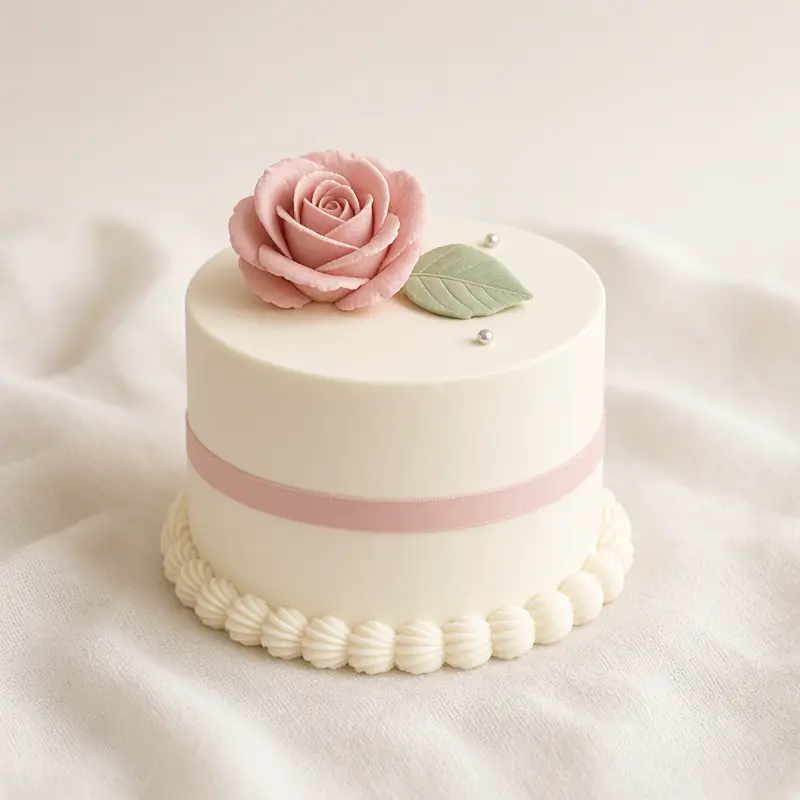

Minimalist Cake in Cebu: Simple Buttercream Designs
Quick answer: A minimalist cake keeps the colour palette, piping and message focused. In Cebu, White Cakes offers a 4-inch Bento and a 6-inch Signature Marble, plus custom buttercream designs by reference. Send one clear photo, your preferred colours, the date and guest count; we confirm what fits the cake and the bench schedule.

Searching for a minimalist cake in Cebu usually means you want a cake that feels considered without a crowded topper or a large sculpted theme. The simplest designs still need decisions: how many people will share it, which colour should lead, whether the message belongs on top, and how the cake will travel to the celebration.
What makes a cake look minimalist?
Minimalist is a design choice, not one fixed recipe. A limited palette, open space on top, one short line of lettering and a small number of piped details can make a cake feel calm. Ivory with one accent colour is an easy starting point; two related colours can add contrast without turning the cake into a busy collage.
Choose the detail that matters most before collecting inspiration photos. It might be a shell edge, a single rose, a small heart, a clean marbled sweep or the celebrant's name. If every reference shows a different palette and finish, the baker cannot tell which part you actually want. Send one main photo and point out the one or two details you like.
Choose a size for the table
A small celebration for two
The 4-inch Bento cake is the compact option. White Cakes finishes it in ivory buttercream with a piped shell border, blush ribbon and one rose. It is sized for two generous slices or three modest slices after a meal. The launch price is ₱449 through January 15, 2027; the regular price is ₱599.
A shared family table
Signature Marble is a 6-inch cake with ivory buttercream, dusty-blue marbling, a shell border and one rose. If you prefer a different restrained palette, ask about a custom brief and include your guest count. General planning estimates are about 8–12 party slices from a 6-inch round; actual portions depend on the finished design and cut. See the Cebu cake size guide for larger options and serving assumptions.
How to brief a minimalist custom cake
- Choose the date and size first. Include how many people will eat cake and whether it is the only dessert.
- Limit the palette. Name one base colour and one accent, or send a photo of the invitation or table setting.
- Keep the wording short. Send the exact spelling and punctuation. A short name or phrase leaves room for the piping.
- Send one useful reference. Tell us whether you want its colour, border, lettering or overall mood. We will confirm a hand-piped version that suits the cake.
- Share the delivery plan. Give the full address, landmark, event time and a person who can receive the cake.
White Cakes decorates in buttercream by hand. Edible print sheets and fondant sculptures are outside the menu, so a reference that depends on a printed portrait or a 3D character will need a different design. We will tell you what can be piped before you pay. For more examples, browse our cake design guide or read how to brief a custom cake.
Price, timing and delivery
Through January 15, 2027, custom cakes start at ₱1,399 for 6 inches and ₱1,999 for 8 inches. Those are starting prices; the final quote depends on the confirmed size and piping. A 50% deposit confirms the order after we approve the date and design. Bouquet Cakes are priced on request.
Orders need at least three days' notice. Weekends, holidays and detailed piping may need earlier planning. White Cakes delivers in Cebu City, Mandaue and Lapu-Lapu. Send a full address and arrange for someone to receive the cake; exact delivery availability and charge are confirmed for the address. Read the guide to cake delivery in Metro Cebu before choosing a delivery time.
Frequently asked questions
Can I order a minimalist cake in Cebu from White Cakes?
Yes. Choose the 4-inch Bento or 6-inch Signature Marble, or send one simple custom reference. We confirm the design details that can be hand-piped in buttercream.
How much is a minimalist cake in Cebu?
Through January 15, 2027, the Bento launch price is ₱449. Custom cakes start at ₱1,399 for 6 inches and ₱1,999 for 8 inches. The final custom quote depends on the design.
Can you print a photo or make a fondant figure?
No. White Cakes works in hand-piped buttercream and does not offer edible print sheets or fondant sculptures. We can confirm a simpler piped alternative from your reference.
How early should I order?
At least three days before your date. Ask earlier for weekends, holidays or detailed piping so we can confirm availability.
Ask about a simple custom design
Send the date, guest count, colour palette and one reference photo through the order form or on WhatsApp. We reply within 24 hours with availability and a quote.